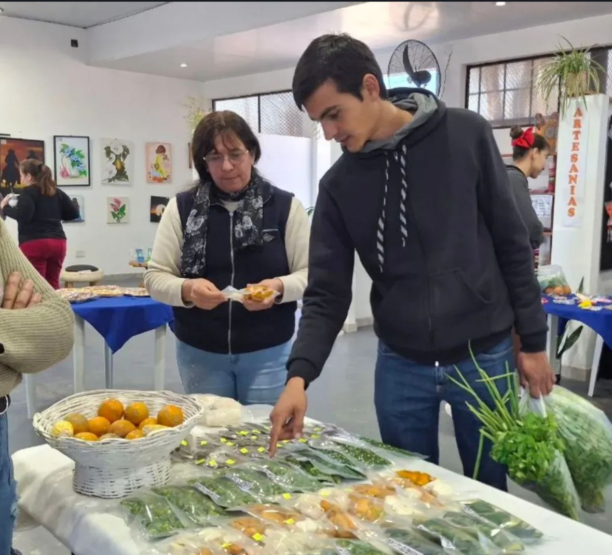

favorite
chat_bubble
send
bookmark
234 Me gusta
vedia.municipio
¡Apoyando a nuestros emprendedores! 🥬🍯 Hermosa jornada en el Mercado Frutihortícola. Productos frescos y locales directo a tu mesa. #GeneralVedia #ProduccionLocal #Emprendedores
Hace 2 horas